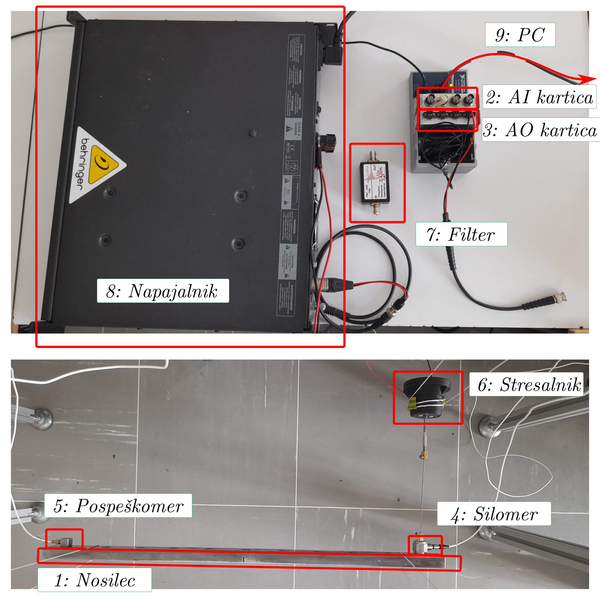
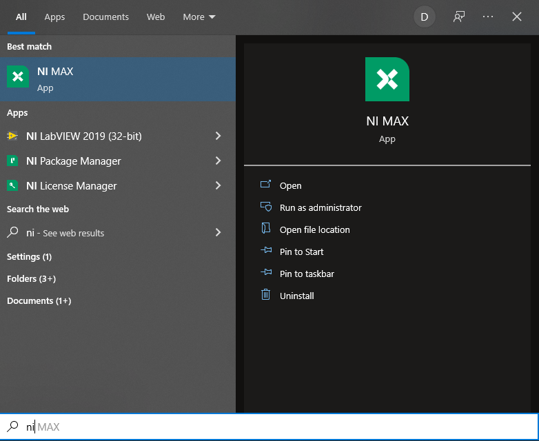
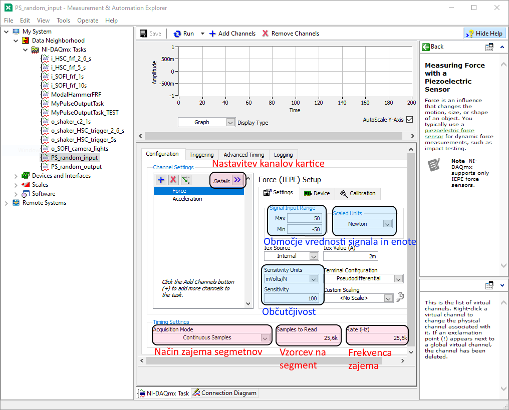
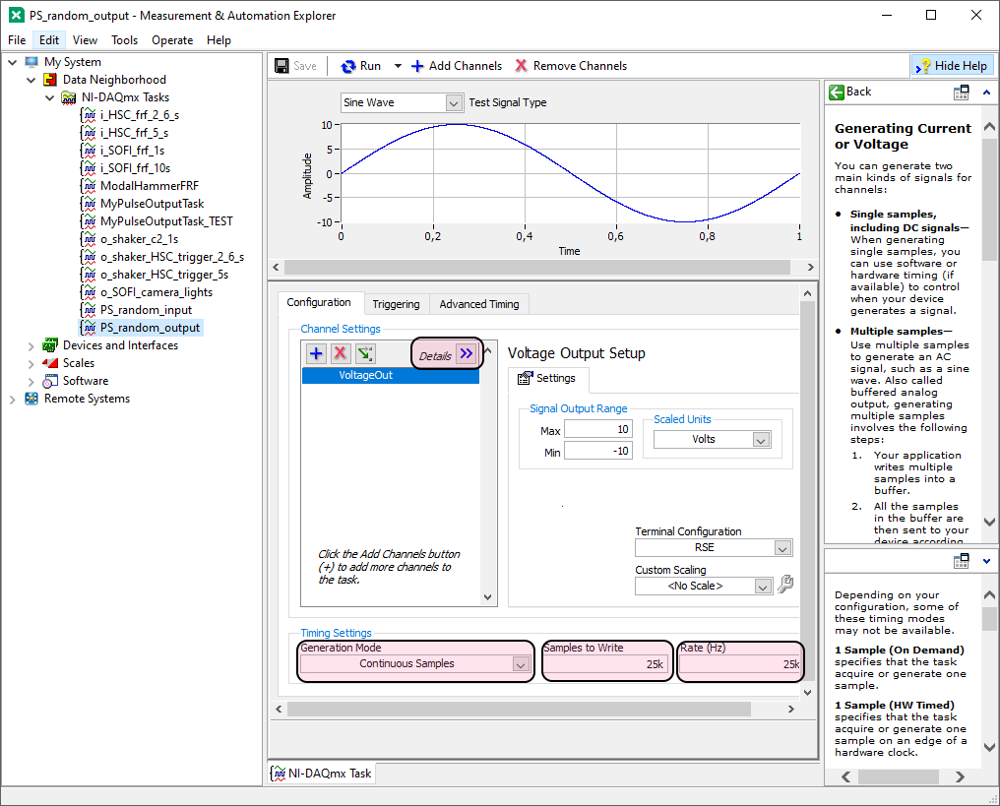
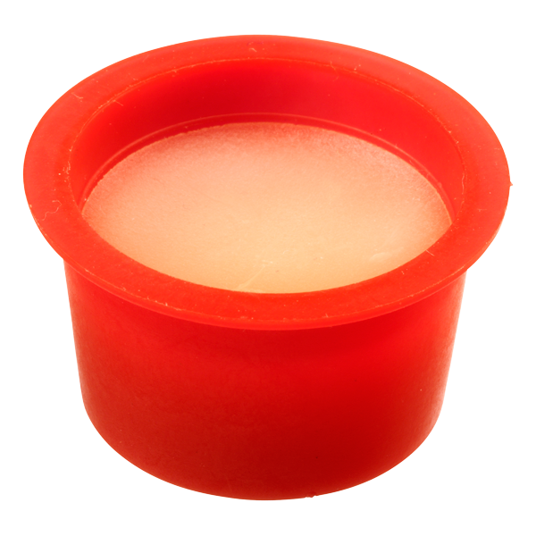

Random excitation - signal acquisition#
Let us recall:
Note
The frequency response function \(H(\omega)\) is the ratio of the (complex) amplitudes of the harmonic response and the excitation of the observed system:
Note
In this template, \(X(\omega)\) and \(x(t)\) denote the response, \(F(\omega)\) and \(f(t)\) the excitation of the system, and \(H(\omega)\) the frequency response function, without assumptions about the measured physical quantities.
In our case, the measured signals are acceleration and force, so the computed frequency response function takes the form of the accelerance.
Signal acquisition for determining frequency response functions with random excitation#
We determine the relationship between the response of a system and a known excitation signal, based on the measured signals \(x(t)\), \(f(t)\) under random, broadband, stationary excitation.
The purpose of this exercise is to get to know the laboratory equipment and to measure the signals needed to determine the frequency response functions of a mechanical linear time-invariant system.
Task#
Task: Measuring signals for determining the frequency response functions of a steel beam
Prepare the acquisition system and measure the response (acceleration) of a steel beam to random excitation.
Each student should perform a measurement of the beam response (acceleration) at the point given in the data table that you will find in Moodle.
We excite the structure with a random broadband profile, using an electrodynamic shaker connected through a connecting rod (stinger) at the prepared point \(0\).
The work in the laboratory will be done in groups. The task consists of three parts, described in more detail below:
Setting up and connecting the measurement equipment.
Preparing the NI MAX + Python program for generating and acquiring signals.
Measuring the excitation force and the system response at different points under random excitation.
Measurement system#
The measurement setup consists of the following components:
Note: depending on the availability of laboratory equipment, the components in the list below may be replaced by equivalent ones with slightly different characteristics.
Always follow the specifications stated on the equipment!
Steel beam:
Length: 500 mm.
11 marked measurement points (at positions \([25, 475]\) mm, spacing \(45\) mm).
Excitation at location \(0\), response measured at locations \(i \in [1, 2, \dots 10]\).
Acquisition (AI) card NI 9234:
4 analog input channels (BNC connector).
\(\pm\) 5 V.
Sampling frequency up to 51200 Hz (allowed values: \(51200 / n\), \(n \in [1, 2, 3, \dots, 31]\)).
24-bit resolution.
Excitation (AO) card NI 9263:
4 analog output channels.
\(\pm\) 10 V.
Sampling frequency up to 100 000 Hz.
16-bit resolution.
Force transducer PCB 208C01:
IEPE force transducer.
BNC connection to the analog input of the measurement card.
Measurement range: \(\pm\) 4.4 N.
Sensitivity: see the label on the instrument box.
Accelerometer PCB 333B30:
IEPE accelerometer.
BNC connection to the analog input of the measurement card.
Measurement range: \(\pm\) 490 \(m/s^2\).
Sensitivity: see the label on the instrument box.
Electrodynamic shaker.
Connected to the structure through a connecting rod (stinger).
Analog high-pass filter.
cutoff frequency: 2.8 Hz
prevents the shaker coil from being supplied with a DC voltage
AC analog signal power amplifier.
maximum permitted input voltage: \(\pm 1\) V (set the maximum voltage of the AO card output channel accordingly!)
To avoid damage to the measurement equipment, set the power amplifier gain to 0 before the measurement!
Find the appropriate gain setting before starting the measurement.
Measurement personal computer (USB connection).
1. Setting up the measurement setup
Connect the measurement setup of the acquisition system. Use the equipment description above and the figure below to help you.
When connecting the sensors (accelerometer, force transducer) to the measurement card, you may use any input channels. Make sure you take your choice into account when setting up the hardware tasks in the NI MAX application.

2. Preparing the measurement program
We will control the measurement (generating the excitation signal and acquisition) in the Python programming language. For communication with the NI measurement equipment we will use the PyDAQmx package and preconfigured tasks for controlling the hardware, set up in the National Instruments Automation Explorer application (NI MAX).
Before we can establish a connection to the measurement equipment in Python, we must configure the tasks in NI MAX appropriately.

The tasks for signal acquisition (PS_random_input) and signal generation (PS_random_output) are already prepared in NI MAX.
Check that the task settings match the prescribed parameters of data acquisition and generation:
The main settings of the acquisition are:
Two channels: force and acceleration (IEPE).
Sampling frequency: 25600 Hz,
Duration of each acquired segment: 2 s,
Continuous acquisition of segments (
Continuous Samples),Number of acquired segments: 5.
(Caution: the parameter values shown in the figures below do not necessarily match the data of your task.)

The main settings of the generation are:
One channel: the signal voltage at the shaker.
Number of samples per second: 20000 Hz
Duration of each generated segment: 2 s,
Continuous generation of segments (
Continuous Samples).Random excitation signal profile of constant amplitude in the range \([10, 3000] Hz\),
Average excitation force amplitude: 1 N RMS.

The Python program should do the following in a loop:
In a loop (for each acquired segment):
Using the
LDAQpackage, acquire the channels of the segment,During the measurement, display the acquired signals in time.
After the measurement is finished (when all segments are acquired):
Save the acquired data to a file of any format.
Use the prepared Python acquisition program. If needed, modify it so that the measurement parameters match the prescribed ones (above).
Caution: Set all parameters of the measurement equipment (channel setup, sensitivity, sampling frequency, units, number of samples per segment) in the NI MAX task! In the Python program, set the parameters related to signal processing (number of acquired segments, excitation signal profile, saving data to files).
Measurement#
3. Carrying out the signal measurement
Each student should acquire the prescribed number of segments of the system response measurement at the point prescribed in the task data.
Since we use only a single acceleration sensor, it must be mounted at the appropriate measurement point before the measurement. Use a small amount of wax adhesive to attach it.

Before starting the measurement, set the gain of the power amplifier so that you reach the prescribed average force amplitude (1 N RMS) in the measurement! Start the preliminary measurement with a gain of 0 and increase it appropriately.
Once you have set up the measurement system, the NI MAX tasks and the parameters of the Python program, start the measurement by running the function IO_meritev() in the “Measurement” section of the Python program.
When carrying out the measurement, make sure that:
the accelerometer is mounted at the appropriate measurement point,
the maximum amplitude of the generated signal is within the permitted limits \(\pm 1\) V,
the power amplifier gain is set so that you excite with the appropriate force amplitude,
you have acquired the appropriate number of measurement segments,
you save the acquired data so that you can open and process it later in Python.
Attention!
You will need the signals acquired in today’s exercise in the next exercise and in the homework assignment. Make sure you have saved the data in a readable format and that you will have access to it next time.